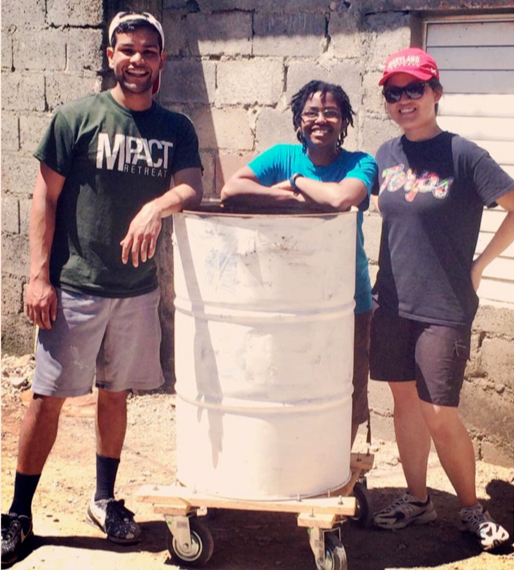
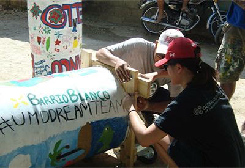
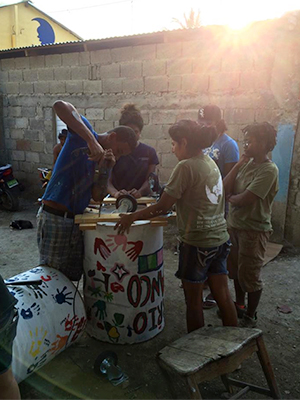
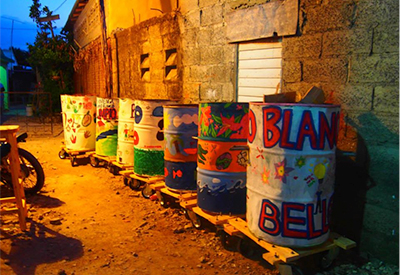
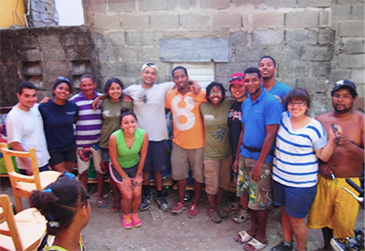

University Innovation Fellow Atin Mittra led a service learning trip to the Dominican Republic's Barrio Blanco and learned a lesson about determination in the process.

Atin Mittra (left) with members of his design team during their spring trip to Barrio Blanco in the Dominican Republic
By Atin Mittra, University Innovation Fellow, University of Maryland College Park
As I embarked to lead an Alternative Spring Break trip to the Dominican Republic, I had no idea the next week would be a life changing experience.
The community we worked in was called Barrio Blanco, named after the man who started the community, Blanco. Blanco is around sixty years old, but his passion for maintaining the barrio makes him move like he’s twenty-five. A small neighborhood hidden away in the bustling tourist attraction of Cabarete, Barrio Blanco represents the determination of community organizers to withstand gentrification. The wealth and abundance that kissed the beachside resorts didn’t make it to the barrio. In fact, half a mile from the five star restaurants, people were walking on unpaved streets covered in trash.
The three service projects our group focused on were teaching children at the DREAM school, painting a mural on the entrance of the neighborhood, and making mobile garbage cans. The mobile trash can project was primed for the design thinking process.
The Problem: The entrance to the community was a quarter mile long with two cinderblock walls on either side. The opening was only wide enough for one large truck. The side streets were far too narrow for the truck to make its way around so the residents could either carry their garbage to the truck or throw it out in front of their house. By and large people chose the latter. As a result, trash lay undisturbed, free to enjoy the Dominican sun. Unfortunately, trash leaked into the nearby lagoon behind the houses, contaminating the water and causing health concerns for the residents. Upon learning about design thinking from the Academy for Innovation and Entrepreneurship at UMD, my co-trip leader and I quickly introduced the methodology into our facilitation identifying potential benefits of using it in a social context. I had hoped to give my twelve participants tools such as design thinking that would allow them to more easily tackle large-scale problems after the trip, a process known as activation.
The Task: Design and build eight mobile trash cans which can be pulled on unpaved, uneven streets and be light enough for children to pull.

Young-Ju and Atin measuring wheel placements
The Process: First, we observed. I jotted some preliminary ideas for the frame and wheel placement after our work was finished each day. I pulled two participants who displayed interest in the design process to help, Taylor and Young-Ju. It was imperative for both of them to share their opinion during the prototype and test phase. At first, both were hesitant to give their input. After relentlessly insisting they share their ideas, Young-Ju exclaimed, “I don’t know, I’m not an engineer like you, you know what you’re doing.” I was both shocked and relieved. Shocked because it felt like I was finally breaking through timid Young-Ju’s shell and relieved because this was something that I could tell was on both of their minds. “What does engineering have anything to do with this, we just need to solve a problem,” I explained turning the focus on the task at hand.
From that point on, they both opened up throughout the design process.

Team members attach a frame to a trash can
After numerous trips to the hardware store and shipping parts in from Puerto Rico, we were finally ready to build all eight trash cans on our last day of service. It started at noon. To start building we created a six-person team. The inconsistent electricity made it difficult to make progress and it seemed like everything was standing between us and our goal. Through sheer determination we pushed forward. As people in the community saw us working, they began coming out of their houses to offer help. A group of men who ran a hardware business nearby stopped working in order to make sure we were adequately equipped to finish the project. Timid Young-Ju who had once held her tongue when asked her opinion now had no problem barking orders at other participants to ensure they were building the frames correctly. Wiping sweat away from my sleep deprived eyes, for a minute I observed at what was happening around me. There were at least a dozen people helping in some capacity now in an assembly line type fashion. My original design team acted as quality assurance. We even brought in someone else from the community to weld handles onto the sides of the can.
The schedule said to end work at 4:30 and head to a nice dinner on the beach, but we couldn’t leave until the job was finished. We finished the last can at 7:00pm as the sun forfeited its position above. Even though we were all battling heat exhaustion, sickness, and sleep deprivation, all ailments were buried the moment we finished. Accomplishment and satisfaction coagulated with the cool Dominican air. It felt like we just won the Super Bowl, everyone was in visible ecstasy. The community leaders invited us back the next day to give a proper thank you/goodbye.

Seven of the completed trash cans
The next evening we entered the barrio making the long walk to the school one last time. As soon as we began walking down the entrance, we heard the pitter patter of running children and in the distance tiny voices yelling “they’re here! they’re here!” in Spanish followed quickly by the muffled thuds of them running into and embracing us with their small arms. They guided us to the school where leaders of the community and kids alike prepared speeches for us. They praised us for the work we did but most of all for caring about the barrio. Everywhere I turned all I heard was “nunca te olvidare” (I will never forget you). I was blown away that people we had no idea existed just five days prior were now telling us we changed their lives. I couldn’t describe the way it felt when I heard the work I did impacted someone’s life. It was the greatest high I’ve ever felt. I ducked out of the party early to look at the trash cans one last time before we left.
As I headed back to our work site, I saw Blanco sitting there alone as if he knew I was coming. I looked up from Blanco’s silhouette to see all the garbage cans were gone. “Where are the garbage cans, Blanco?” I asked. In a calm voice he told me if I wanted to see them again, I’d have to walk around the whole community because they had already been put to use. I was speechless. Not even twenty-four hours after we finished the project, they were already serving their purpose. It was incredible to think through engineering and design thinking we were able to build something that would help this group of people we grew to love.

The final assembly team poses after finishing all eight trash cans
At times engineering can be nebulous and my mind would lay burdened by theory and formulas in class, but I wouldn’t have been able to help the residents of Barrio Blanco if not for those classes. It was amazing to be able to apply things from class to the real world and make a difference. It was also rewarding to be able to demystify engineering and design to non-STEM majors who found instant utility from its principles. I will never forget how happy the residents of Barrio Blanco were. Our closeness to the community greatly aided the human centered piece of our design process. Not only did we want what we built to be used, but we cared so deeply about our friends in the barrio, that nothing but the best was acceptable. If you’re passionate enough about a project and you remain resolutely determined on achieving the goal, nothing can stop you.
Atin Mittra is a student at the University of Maryland, College Park majoring in Aerospace Engineering with a minor in Technology Entrepreneurship, graduating in 2014. He is passionate about social entrepreneurship and understanding social trends. Atin is also the Founder and Executive Director of MADE Microfinance, a non-profit that aims to build financial literacy and assets for people who are rejected by the traditional banking industry.